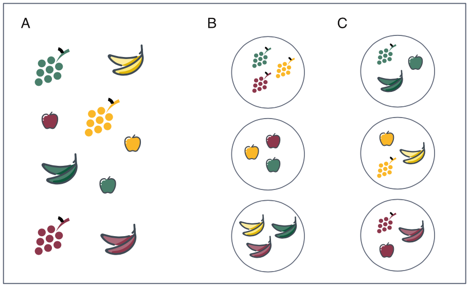
16 Clustering: art of finding groups
16.1 Introduction
Clustering is about finding structure in the data by identifying natural groupings (clusters). In other words, clustering aims to group object according to similarity. As a results, a cluster is a collection of objects (samples, genes etc.) that are more “similar” to each other that they are to cases in other clusters.
Clustering for a set of \(n\) objects is usually performed based on a selection of \(p\) variables. We can for instance cluster \(n\) blood samples based on \(p\) gene expression measurements or we can cluster \(n\) genes based on the \(p\) samples blood profiles.
Clustering is unsupervised learning, where we do not use any data labels to perform grouping. It is commonly used in EDA to reveal structures in the data.
16.2 Common usage
- Grouping samples based on clinical data
- Grouping samples based on gene expression profiles
- Grouping cells by cell types, e.g. in scRNA-seq
- Biomarker studies
- Disease subtyping and stratification
- Clustering metagenomics contigs
- Species classification and biodiversity studies
16.3 Partition methods vs. hierarchical
flowchart LR A([Type of splitting]) -.-> B([Partition]) A([Type of splitting]) -.-> C([Hierarchical]) C([Hierarchical]) -.-> D([Agglomerative]) C([Hierarchical]) -.-> E([Divisive])
The partitioning and hierarchical methods are two general classes of clustering methods.
In partitioning methods address the problem of dividing \(n\) objects, described by \(p\) variables, into a small number (\(k\)) of discrete classes.
For instance, considering only two genes A and B (\(p=2\)) we can group 70 blood samples (\(n=70\)) into three clusters (\(k=3\)).
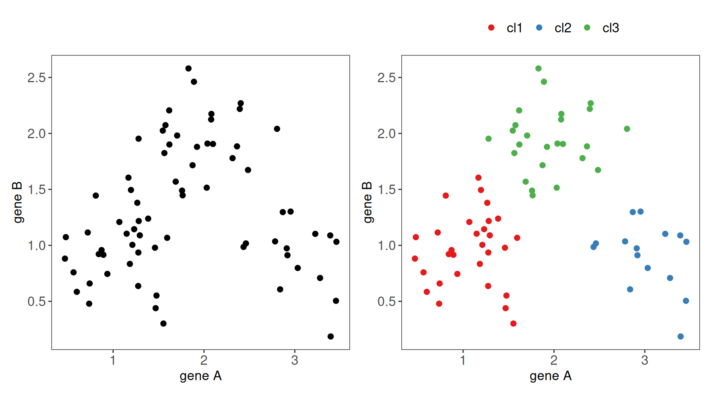
- Divisive hierarchical methods begin with all of the objects in one cluster which is broken down into sub-cluster until all objects are separated. The agglomerative approach works in the opposite direction as single-member clusters are increasingly fused (joint) until all objects are in one cluster.
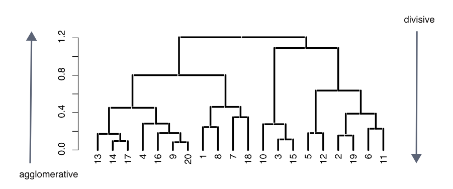
16.4 Distance and similarity measures
- All clustering algorithms start by measuring the similarity between the objects to be clustered. Similar cases will be placed into the same cluster.
- It is also possible to view similarity by its inverse, the distance between the objects, with distance declining as similarity increases.
- There are large number of distance metrics by which distance can be measured. Some are restricted to particular data types.
- All distance metrics share the property that distance declines with increasing similarity. However, they do not share a common distance between the same two cases, i.e. distance changes with the similarity measure, leading to potential alternative clustering results.
- Three general classes of distance measures are Euclidean metrics, Non-Euclidean metrics and Semi-metrics.
Euclidean metrics
- These metrics measure true straight-line distances in Euclidean space.
- In a univariate example the Euclidean distance between two values is the arithmetic difference. In a bivariate case the minimum distance between two points is the hypotenuse of a triangle formed from the points (Pythagoras theorem). For three variables the hypotenuse extends through three-dimensional space. In n-dimensional space, the Euclidean distance between two points \(A = (a_1, a_2, ..., a_n)\) and \(B = (b_1, b_2, ..., b_n)\)
\[distance(A,B) = \sqrt{\sum_{i=1}^{n}(a_i - b_i)^2}\]
- For instance, given two objects, red circle at \((5, 3)\) and yellow cylinder at \((3, 1)\) the Euclidean distance is \(d = \sqrt{(3 - 5)^2 + (1 - 3)^2} \approx 2.82\)
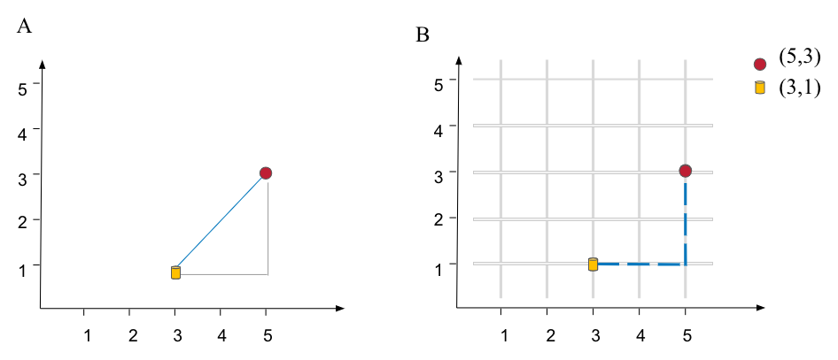
Non-Euclidean metrics
- These are distances that are not straight lines, but which obey four rules. Let \(d_{ij}\) be the distance between two objects, \(i\) and \(j\).
- \(d_{ij}\) must be 0 or positive (objects are identical, \(d_{ij} = 0\), or they are different, \(d_{ij} > 0\))
- \(d_{ij} = d_{ji}\), distance from A to B is the same as from B to A
- \(d_{jj} = 0\), an object is identical to itself
- \(d_{ik} \le d_{ij} + d_{jk}\), when considering three objects the distance between any two of them cannot exceed the sum of the distances between the other two pairs. In other words, the distances can construct a triangle.
- The Manhattan or City Block metric is an example of this type of distance metrics. \[distance (A,B) = \sum|a_i - b_i|\]
- In our red circle and yellow cylinder, we get: \(d = |3 - 5| + |1 - 3| = 4\)
Semi metric
- Semi metric distances obey the first three aforementioned rules, but may not obey the last “triangle rule”.
- The cosine measure is an example of semi metric distance class. It is often used to compare vectors in text mining, where documents are often represented as vectors of numbers that represent word/term frequencies.
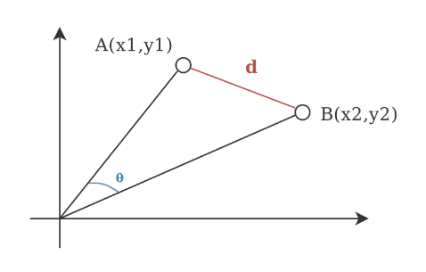
16.4.1 Distances for interval variables
Euclidean distance
- Already mentioned above, normal Pythagoras theorem extended to the appropriate number of dimensions.
- Can be used when measuring similarity between points in Euclidean space, e.g. working with spatial data such as geographic coordinates or points on a map.
- It may not be the best choice for high-dimensional data due to “distance concentration” phenomena. In high-dimensional space, the pair-wise distances between different data points converge to the same value as the dimensionality increases, making it hard to distinguish points that are near and far away.
Squared Euclidean distance
- The sum of the squared differences between scores for two cases on all variables, i.e. the squared length of the hypotenuse. This measure magnifies distances between cases that are further apart.
- Note that the squared Euclidean distance is not a metric as it does not fulfill the triangle inequality.
Chebychev
The absolute maximum difference, on one variable, between two cases. \[distance(A, B) = max |a_i - b_i|\]
This measures examines distances across all of the variables, but only uses the maximum distance. This one dimensional difference need not be constant across cases. For example, age could be used for one pair and height for another.
Interesting application of the distance is by Ghaderyan and Beyrami (2020) who tried many distance metric in analysis of gait rhythm fluctuations for automatic neurodegenerative disease detection. They achieved good results using Chebyshev and cosine distance to distinguish patients with Amyotrophic Lateral Sclerosis, Parkinson’s disease (PD) and and Huntington’s disease (HD).
City block or Manhattan distance
- A distance that follows a route along the non-hypotenuse sides of a triangle. The name refers to the grid-like layout of most American cities which makes it impossible to go directly between two points.
- This metric is hence less affected by outliers than the Euclidean and squared Euclidean distances. \[distance (A,B) = \sum|a_i - b_i|\]
- Is preferred over Euclidean distance when there is a high dimensionality in the data.
- May not be the best choice, if one wants to perform space rotation or wants a smooth and differentiable function (converge more easily).
Mahalanobis distance
- It is a generalized version of a Euclidean distance which weights variables using the sample variance-covariance matrix. Because the covariance matrix is used this also means that correlations between variables are taken into account. \[distance(A,B) = [(a_i - b_i)^t S^{-1}(a_i - b_i)]^{1/2}\]
where \(S^{-1}\) is the inverse covariance matrix$
Minkowski
- Minkowski distance is a generalization of both the Euclidean distance and the Manhattan distance in a normed vector space.
- It can be thought of as a way of measuring the length of the path between two points when moving along axes aligned with the coordinate system.
- The formula for the Minkowski distance of order \(p\) between two points \(A = (a_1, a_2, ..., a_n)\) and \(B = (b_1, b_2, ..., b_n)\) in an \(n\)-dimensional space is given by \[distance(A,B) = \left(\sum_{i=1}^{n} |a_i - b_i|^p\right)^{1/p}\] where \(p\) determines the form of the distance: for \(p=1\), it becomes the Manhattan distance (sum of the absolute differences of their coordinates); for \(p=2\), it yields the Euclidean distance (the shortest direct line between two points); and for \(p=\infty\), it approaches the Chebyshev distance (the maximum difference along any coordinate dimension).
- The versatility of the Minkowski distance makes it applicable across various fields and data types, allowing adjustments for different spatial concepts and scales.
Canberra
- The Canberra is a weighted version of the Manhattan distance, as it calculates the absolute difference between two vectors and normalizes it by dividing it by the absolute sum of their values \[distance(A, B) = \sum_{i=1}^{n} \frac{|a_i - b_i|}{|a_i| + |b_i|}\]
- Blanco-Mallo et al. (2023) compared a series of distance metrics for machine learning purposes and showed that Canberra distance had the best overall performance and the highest tolerance to noise.
16.4.2 Distances for binary data
- There is large number of metrics available for binary data, and many have more than one name, with Dice and Jaccard measures used probably most often in biology. All of the distance measures for binary data use two or three values obtained from a simple two by two matrix of agreement.
| Case | i | ||
| + | - | ||
| Case j | + | a | b |
| - | c | d |
where:
- \(a\) is the number of cases which both share the attribute
- \(d\) number of cases which neither have the attribute
- \(b\) and \(c\) dare the number of cases in which only one of the pair has the attribute.
- Note: \(a + b + c + d = n\), the sample size
Dice
- A similarity measure in which joint absences \(d\) are excluded from consideration, and matches \(a\) are weighted double.
- Also known as Czekanowski or Sorensen measure
\[distance(A, B) = 1 - 2a / (2a + b + c)\]
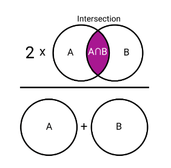
Jaccard
- A similarity measure in which joint absences \(d\) are excluded from consideration.
- Equal weight is given to matches and mismatches.
\[distance(A, B) = 1 - \frac{|A \cap B|}{|A \cup B|} = 1 - a / (a + b + c)\]
16.5 Partition methods: k-means & PAM
16.5.1 k-means
- The k-means clustering aims to divide all \(n\) objects, described by \(p\) variables, into exactly \(k\) clusters of discrete classes.
- The value of \(k\), i.e. number of clusters, has to be given to the algorithm.
- The algorithm minimizes the variance within clusters, by iteratively assigning each object to the cluster with the closest centroid, where centroid of cluster \(k\)th is the arithmetic mean of all \(n_k\) objects in the cluster.
\[{\mathbf m}_k = \frac{1}{n_k} \sum_{i=1}^{n_k} {\mathbf x}_{i}\]
- The simplest version of k-means algorithm is by Lloyd and Forgy’s Lloyd (1982). In R,
kmeansfunctions implements a modified more effective version of this algorithm by Hartigan and Wong (1979).
The Lloyd and Forgy’s algorithm
Initialization. Select \(k\) initial centroids. The initial centroids can be selected in several different ways. Two common methods are
- Select \(k\) data points as initial centroids.
- Randomly assign each data point to one out of \(k\) clusters and compute the centroids for these initial clusters.
Assign each object to the closest centroid (in terms of squared Euclidean distance). The squared Euclidean distance between an object (a data point) and a cluster centroid \(m_k\) is \(d_i = \sum_{j=1}^p (x_{ij} - m_{kj})^2\). By assigning each object to closest centroid the total within cluster sum of squares (WSS) is minimized. \[WSS = \sum_{k=1}^K\sum_{i \in C_k}\sum_{j=1}^p (x_{ij} - m_{kj})^2\]
Update the centroids for each of the \(k\) clusters by computing the centroid for all the objects in each of the clusters.
Repeat steps 2 and 3 until convergence.
When to use and not to use k-means
- k-means is relatively fast and scalable, making it a good choice for large data sets. It works well with continuous, numeric data since it relies on Euclidean distances. Results are easy to interpret due to the simple assignment of data points to clusters. It works good if one knows the number of clusters or can get that the number of clusters for internal or external validation.
- On the downside, k-means is sensitive to the initial placement of cluster centroids. It can sometimes converge to local minima, resulting in suboptimal cluster assignments. Outliers can also significantly impact the position of centroids and lead to poor cluster assignments.
16.5.2 PAM, partition around medoids
- PAM is very similar to k-means, but instead of using centroids we use medoids to represent clusters.
- Medoid is centrally located objects within the cluster.
- This makes PAM more robust when compare to k-means, but with higher computational complexity.
The algorithm can be described in few steps:
- Initialization: randomly select \(k\) objects as the initial medoids.
- Assignment: assign each object to the nearest medoid, forming \(k\) clusters.
- Update: for each cluster, find the new medoid by selecting the object that minimizes the sum of distances to all other objects in the cluster.
- Check for convergence: if none of the medoids have changed, the algorithm has converged. Otherwise, return to step 2 (Assignment) and repeat the process.
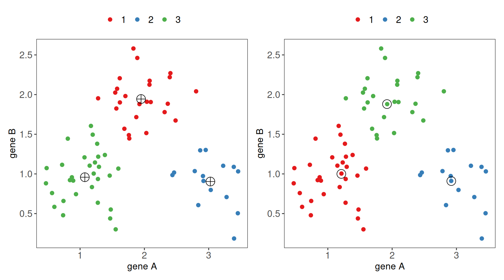
16.6 HCL, hierarchical clustering
- Hierarchical clustering does not require the number of clusters to be specified. Instead of creating a single set of clusters it creates a hierarchy of clusterings based on pairwise dissimilarities.
- This hierarchy of clusters is often represented as a dendrogram.
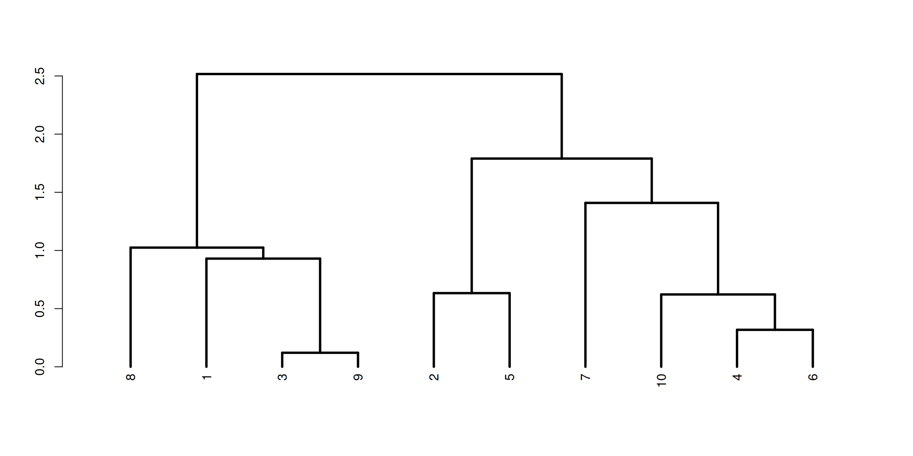
- There are two strategies for hierarchical clustering agglomerative (bottom-up) and divisive (top-down).
- The agglomerative strategy starts at the bottom with all objects in separate clusters and at each level merge a pair of clusters.
- The merged pair of clusters are those with the smallest dissimilarity.
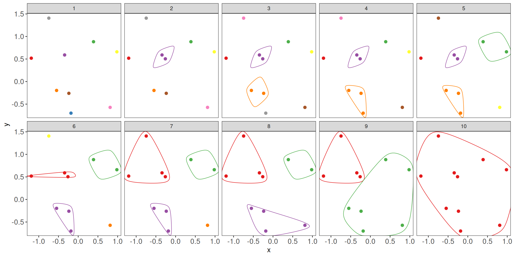
- The divisive strategy starts at the top with all objects in a single cluster and at each level one cluster is split into two.
- The split is chosen to produce the two groups with the largest possible dissimilarity.
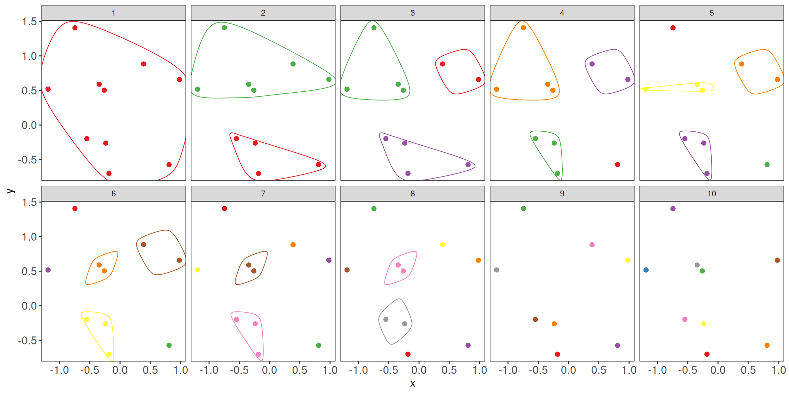
- With \(n\) objects to cluster both strategies will produce a dendrogram representing the \(n-1\) levels in the hierarchy.
- Each level represent a specific clustering of the objects into disjoint clusters.
- The heights of the branches in the dendrogram are proportional to the dissimilarity of the merged/split clusters.
- The divisive approach is used less often due to the computational complexity. Here, we will focus more on the commonly used agglomerative approach.
16.6.1 Linkage & Agglomerative clustering
- Agglomerative clustering starts with all objects in separate clusters and at each level merge the pair of clusters with the smallest dissimilarity. The pairwise dissimilarities between objects can be computed according to the distance measures discussed above.
- We need one more ingredient for hierarchical clustering, that is a method for computing dissimilarity between clusters, known as linkage method. There are several linkage methods, as illustrated below.
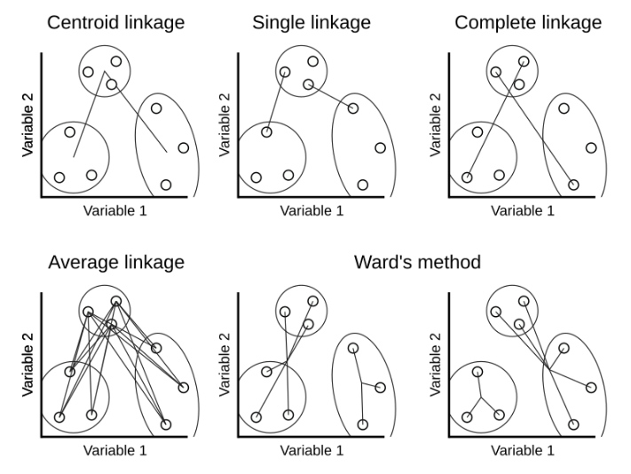
More formally, the dissimilarity between two clusters A and B with objects \(a_1, \dots, a_{n_A}\) and \(b_1, \dots, b_{n_B}\) are defined as follows.
Single linkage
- Single linkage takes as a cluster dissimilarity the distance between the two closest objects in the two clusters. \[d_{sl}(A, B) = \min_{i,j} d(a_i, b_j)\]
Complete linkage
- Complete linkage takes as a cluster dissimilarity the distance between the two objects furthest apart in the two clusters. \[d_{cl}(A, B) = \max_{i,j} d(a_i, b_j)\]
Average linkage
- Average linkage takes as a cluster dissimilarity the average distance between the objects in the two clusters. \[d_{al}(A, B) = \frac{1}{n_A n_B}\sum_i\sum_j d(a_i, b_j)\]
Ward’s linkage
Ward’s linkage method minimize the within variance, by merging clusters with the minimum increase in within sum of squares. \[d_{wl}(A, B) = \sum_{i=1}^{n_A} (a_i - m_{A \cup B})^2 + \sum_{i=1}^{n_B} (b_i - m_{A \cup B})^2 - \sum_{i=1}^{n_A} (a_i - m_{A})^2 - \sum_{i=1}^{n_B} (b_i - m_{B})^2\] where \(m_A, m_B, m_{A \cup B}\) are the center of the clusters \(A\), \(B\) and \(A \cup B\), respectively.
Note that Ward’s linkage method should not be combined with any dissimilarity matrix as it is based on the squared Euclidean distance. In the R function
hclusteither the Euclidean or squared Euclidean distance can be used in combination with the linkagemethod='ward.D2'ormethod='ward.D, respectively.
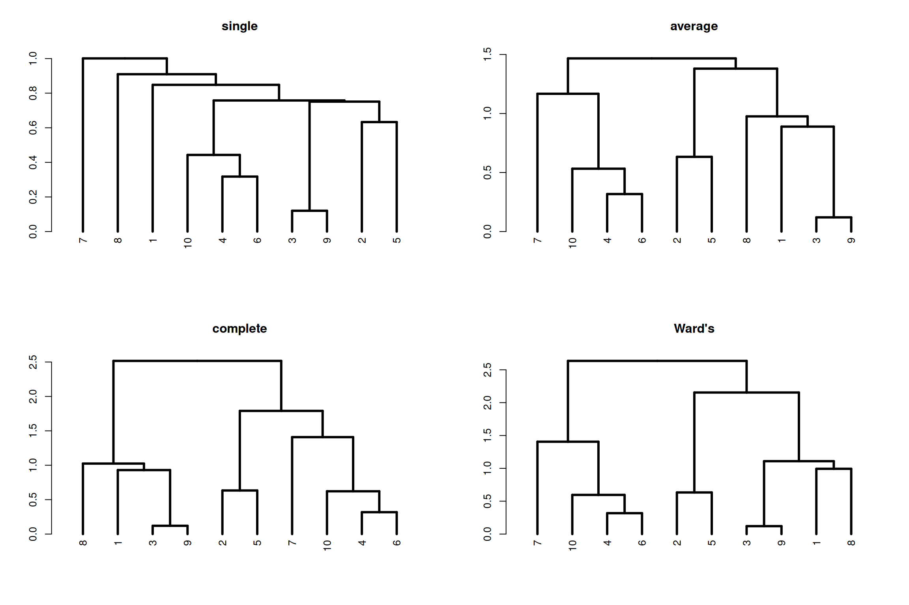
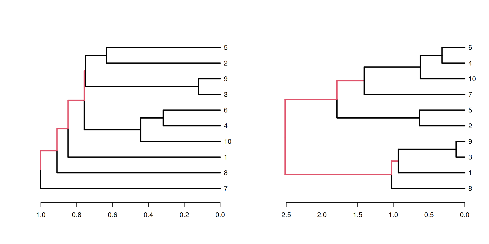
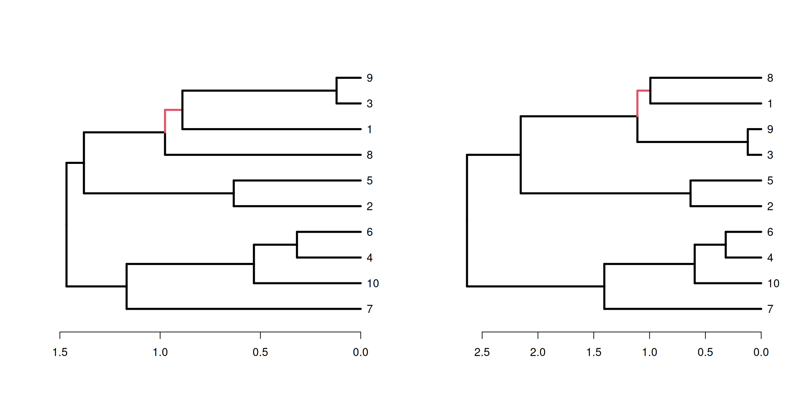
16.6.2 Getting clusters
To find concrete clusters based on HCL we can cut the tree either using height or using number of clusters.
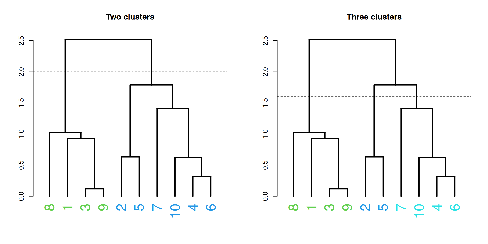
16.7 How many clusters?
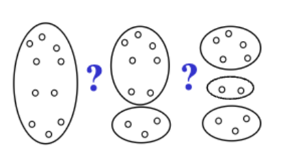
- As we have seen above clustering is subjective, and there is more than one way to think about groupings of objects. In addition, there are many clustering algorithms to choose from, each with its own set of parameters and assumptions. We need some ways to be able to say something about how good our clustering, or how many clusters we have.
- We will focus on internal validation that evaluates clustering quality and estimates cluster count without external information. In external validation one compares clustering outcomes to known results, measuring label match to select the best algorithm for a dataset.
- Internal validation methods evaluate clustering often by measuring the compactness and separation of the clusters - objects within a cluster exhibit maximal similarity (compactness), while those in separate clusters maintain a high degree of distinction (separation).
- There are many ways to measure this, and some common methods include elbow method based on the total sum of squares \(WSS\), Silhouette method or Gap statistic.
NbClustpackage in R implements 30 indexes for determining the optimal number of clusters in a data set to offer the best clustering scheme.
16.7.1 Elbow method
- The Elbow method is based on the total within sum of squares, \(WSS\), that the k-means algorithm tries to minimize.
- By running the algorithm with several different values of \(k\), e.g. from 1 to 10, we can plot \(WSS\) as a function of \(k\).
- The inflection (bend, elbow) on the curve indicates an optimal number of clusters.
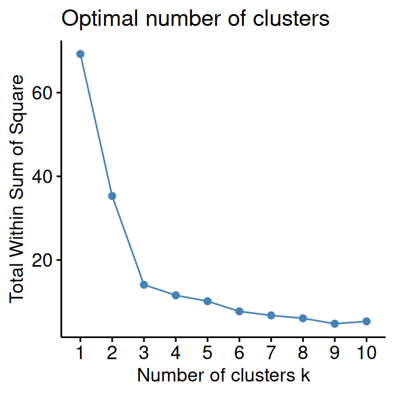
16.7.2 Silhouette method
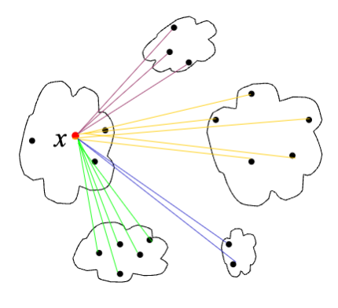
The silhouette value for a single object \(i\) is a value between -1 and 1 that measures how similar the object is to other objects in the same cluster as compared to how similar it is to objects in other clusters.
The average silhouette over all objects is a measure of how good the clustering is, the higher the value the better is the clustering.
The silhouette value, \(s(i)\), for an object \(i\) in cluster \(C_a\) is calculated as follows:
- Average distance between \(i\) and all other objects in the same cluster \(C_a\) \[a(i) = \frac{1}{|C_a|-1} \sum_{j \neq i, j \in C_a} d(i, j)\]
- Average distance between \(i\) and all objects in another cluster \(C_b\), \(d(i,C_b)\) and define the minimum; \[b(i) = \min_{b \neq a} d(i, C_b)\]
- The Silhouette index is defined as; \[s(i) = \frac{b(i) - a(i)}{max(a(i), b(i))}\]
A silhouette value close to 1 means that the object is very well clustered, a value close to 0 means that the object lies between two clusters. A negative silhouette value means that the object is incorrectly clustered.
The average silhouette over all objects is a measure of how good the clustering is, the higher the value the better is the clustering.
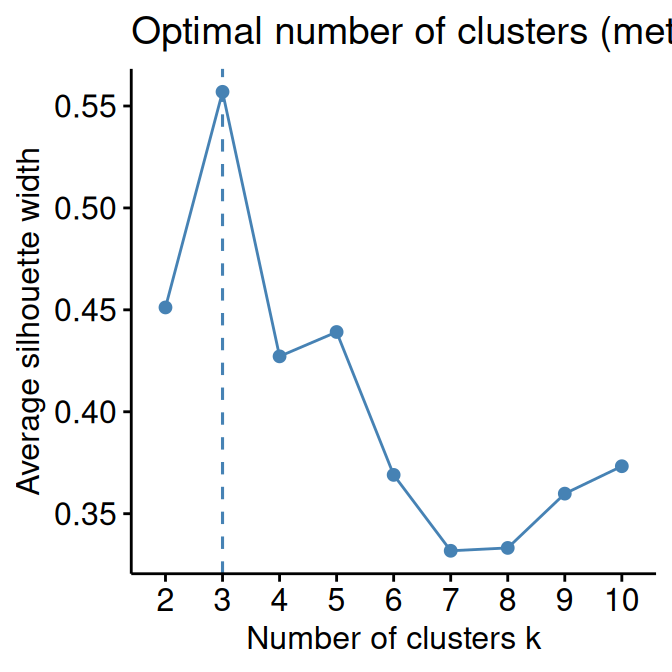
16.7.3 Gap
- The gap statistic compares the total within intra-cluster variation for different values of \(k\) with their expected values under null reference distribution of the data. The estimate of the optimal clusters will be value that maximize the gap statistic (i.e., that yields the largest gap statistic). This means that the clustering structure is far away from the random uniform distribution of points.
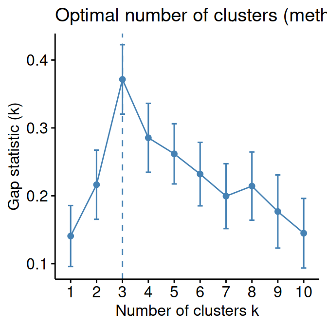
16.7.4 pvclust
PvclustR package to assess the uncertainty in hierarchical cluster analysis (Suzuki and Shimodaira 2006)- Pvclust calculates probability values (p-values) for each cluster using bootstrap resampling techniques.
- Two types of p-values are available: approximately unbiased (AU) p-value and bootstrap probability (BP) value. Multiscale bootstrap resampling is used for the calculation of AU p-value, which has superiority in bias over BP value calculated by the ordinary bootstrap resampling.
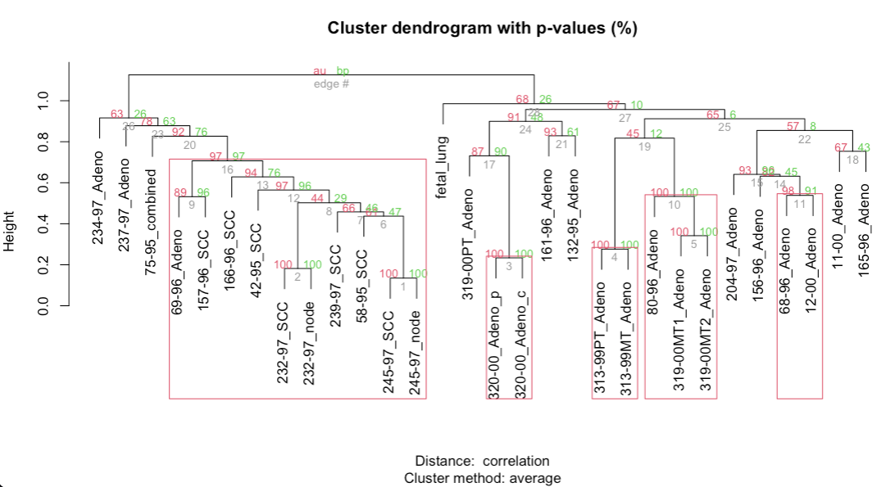
16.8 Two-way clustering
- When dealing with omics data we often perform two-way clustering, where there is simultaneous clustering, typically hierarchical, of the rows (e.g. gene expression) and columns (e.g. samples).
- This is often a default option when showing data on the heatmaps.
- We suggest checking out ComplexHeatmap package that provides rich functionalities for customizing, including splitting columns and rows by clustering solutions
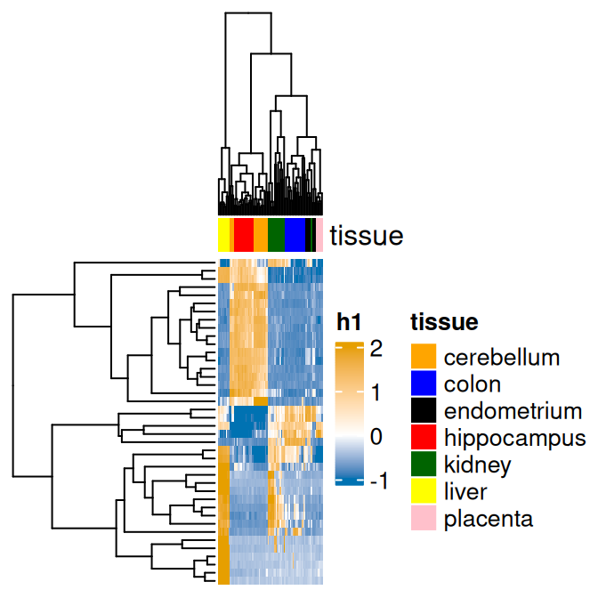
16.9 Additional comments & resources
- In addition to partitioning and hierarchical clustering methods there is a wide range of other algorithms. Common ones include model-, density, and grid-based methods. Some of them are explained in this presentation. Here, you can also find more details about external validation of cluster analysis.
- Although historically it was not recommended to apply cluster analysis to mixed data types (e.g. both binary and continuous), some distance metrics have been developed, e.g. Gower’s general coefficient to calculate similarity between different data types. Lately, the principles of decision trees have been also used for computing yet another metric for mixed data types, unsupervised extra trees dissimilarity, UET. For an interesting study comparing clustering methods for heterogeneous data, where more details about Grower’s and UET can be found, see Preud’homme et al. (2021).
- For a more applied reading in health research, reviewing distance metrics and clustering algorithms see Gao et al. (2023).
- In scRNA-seq analysis it is common to use clustering based on the graph data. In particular, more details about Leiden algorithms can be found here or in the (Traag, Waltman, and Eck 2019).